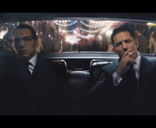
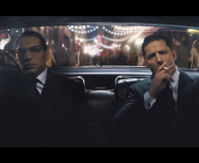
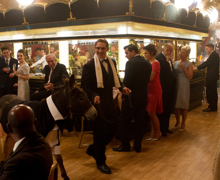
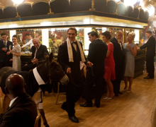

R
2h 12min
Biography, Crime, Drama
20 November 2015
7.0
55
4 wins & 10 nominations
The true story of London's most notorious gangsters, twin Reggie and Ronnie Kray. As the brothers rise through the criminal underworld, Ronnie advances the family business with violence and intimidation white Reggie struggles to go legitimate for local girl Frances Shea. In and out of prison, Ronnie's unpredictable tendencies and the slow disintegration of Reggie's marriage threaten to bring the brothers' empire tumbling to the ground.
Brian Helgeland
Brian Helgeland
John Pearson (book)
65 photos | 25 videos | 474 news articles
 

 

Cast overview, first billed only | See full cast

Albert Donoghue

Reggie Kray
Ron Kray
Nipper Read
Constable Scott

Frances Shea
Frank Shea

Mrs Shea
Official Sites
Country
Language
Release Date
Also Known As
Filming Locations
Official Facebook | Official Site +
UK | France | USA
English
20 November 2015 (USA) +
Lendas do Crime +
Burnham Beeches | Buckinghamshire | England | UK +
Trivia | Goofs | Quotes | Connections | Soundtracks
"Piranha Brothers" is a Monty Python sketch (Face the Press) of Monty Python's Flying Circus, September 15, 1970. The premise is a BBC current affairs documentary, inexplicably entitled Ethel the Frog, covering the exploits of the fictional brothers Doug and Dinsdale Piranha, who employed a combination of "violence and sarcasm" to intimidate the London underworld and bring the city to its knees. Dinsdale was said to be afraid of "Spiny Norman", an apparently imaginary gigantic hedgehog whose reported size varied on Dinsdale's mood. The sketch constitutes a pastiche of the real-life story of the Kray twins, famous gangsters in the East End of London in the 1950s and 1960s. Doug and Dinsdale Piranha were loosely based on Reggie and Ronnie Kray, and the policeman who pursued them, Harry "Snapper" Organs, was loosely based on the policeman who led the investigation against the Krays, Detective Superintendent Leonard "Nipper" Read. Spiny Norman is possibly a subtle reference to the notorious former head of the London Drug Squad, Detective Sergeant Norman Pilcher.
In the confrontation between Jack McVitie and Reggie Kray, Reggie's handgun changes from a silver Desert Eagle to a black Walther PP.
[first lines]
Frances Shea: London in the 1960s. Everyone had a story about the Krays. You could walk into any pub to hear a lie or two about them. But I was there and Im not careless with the truth. They were brothers, but bound by more than blood. They were twins as well, counterparts. Gangster princes of the city they meant to conquer. Ron Kray was a one-man London mob. Bloodthirsty, illogical, and funny as well. My Reggie was different. Once in a lifetime do you find a street-fighting man like Reg.
References Goodfellas (1990)
Watermelon Man
Written by Herbie Hancock
Performed by Poncho Sanchez
Courtesy of Universal Music Group International/Concord Music Group Inc
Under licence from Universal Music Operations Ltd
This FAQ is empty. Be the one to add the first question.
7.0
28 February 2016 | by the bob-the-movie-man (United Kingdom) | See all my reviews
Tom Hardy is a strange fish as an actor. Famous for being almost incomprehensible in "The Dark Night Rises" and almost equally incomprehensible in his co-starring role in "The Revenant", it's sometimes really difficult to get a sense of his true abilities. Here in "Legend" he gets to show what he's made of
. Twice! Hardy plays both roles in the story of Reggie and Ronnie Kray, the infamous gangsters who ruled across large parts of London in the 1960's.
The film tells the story of the rise of the duo, focusing in particular on the wooing by Reggie of Frances (Emily Browning), the local girl who fell in love with and then married the hoodlum. Reggie and Ronnie – whilst both undisputed 'bad uns' – were as different as chalk and cheese. ... +
Swiss man army (2016)
1h 37min
7.0
adventure, comedy, drama
her (2013)
2h 06min
8.0
romance, science fiction, drama
The Dark Knight (2008)
2h 32min
9.0
action, crime, drama
The Martian (2015)
2h 24min
8.0
adventure, science fiction, drama